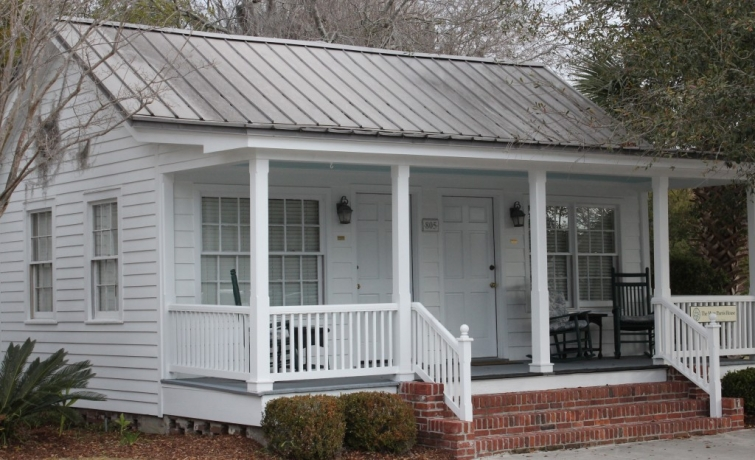
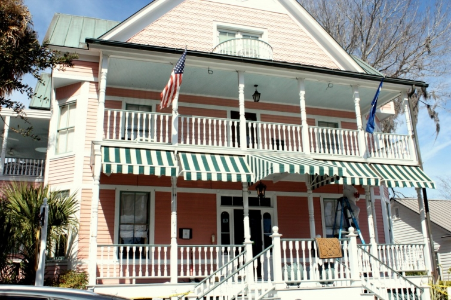
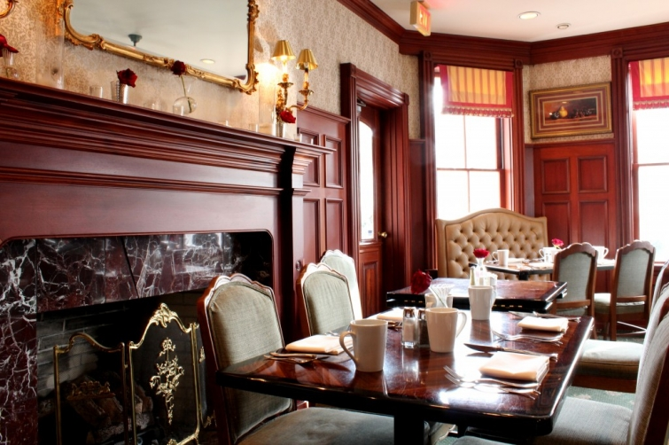

.png)
.PNG)
.PNG)
.PNG)
.PNG)
.PNG)
.JPG)
.JPG)
.PNG)
.PNG)


I have more South Carolina travels for you today. When I first started the plans for our trip there, I had a particular place in mind to stay. In fact, it was the majority of the reason I wanted to go. But, as things often happen, I waited too late to make a reservation. By the time the reservations were made, the rates of the available rooms had gone up $100 a night, and I just did not want to spend that much on a room (or cottage.) So I had to rethink our options. I think you are going to be surprised by what we chose.
We ended up finding our accommodations through the Beaufort Inn. (They also own the cottage in the photo at the top of the post.)

The inn has had a very well done renovation. In fact, as you can see from the photo above, they were doing some painting on it while we were there. Here is a peek at the interior.

They even have an on-site day spa.
Now I have told you all of this, but there is something you need to know. As much as I love the exteriors of antebellum homes, I am not a fan of the Victorian style furnishings that you typically find in them, and my husband does not care for rooms that are formal or fancy. So after my first choice was no longer an option, I had a difficult time finding something we would like. Lucky for us, the very Victorian Beaufort Inn also manages a property that is not Victorian at all – and it is still in the heart of the historic district. Take a look at…

This building is a renovated 1950’s Greyhound bus station and houses two very spacious suites. Yes, they are quite modern in style, but it was a nice change from our traditionally decorated house (and very different from all the formal rooms found in the area.)
Although small, the kitchenette is perfect for breakfast preparation (if you need it.) Your breakfast at the inn is included in your daily rate.
The renovation of the bus station was done so well that the owners won a prestigious award for it. You can see a video about it here.
When we travel, I like to look at developments and study the architectural style of the homes in them. There were three particular ones I was very interested in seeing in the Beaufort area while we were there, and the first was Oldfield. It is not in Beaufort, but not too far from it in Okatie.
We drove into Oldfield’s entry…
and pulled up to the gatehouse right outside their cute postal/real estate office/store.
(Here’s a look inside that charming building.) historicalconcepts.com
historicalconcepts.com
Unfortunately, the only way they were going to let us through their gate was if we agreed to take a tour with a sales rep. This was a very short vacation trip, and I wasn’t going to spend it with a salesman, so we decided to go elsewhere. But I did manage to find a few photos of Oldfield on the internet to share with you, so that you can see why I was interested in it.
Obviously, it is a private community. They have a golf course and a big equestrian center. This is the sports club facility designed to look like a farm building.
Here is the sports club interior. historicalconcepts.com
historicalconcepts.com
This building is Oldfield’s Outfitters Center.
And if we had been able to ride around Oldfield, we would have found homes like these. oldfield1732.com
oldfield1732.com
I like the nostalgic appeal of Oldfield’s design. (Although at times, it does feel kind of Disney-ish.) It is certainly out of my budget, but if we were to build again, there are many of its architectural elements I would like to replicate. Their website has a nicely done video (here) to give you a better feel for the place. The music on it is quite pretty, and the narrator sounds a little like Ralph Waite – the actor who played the father on The Waltons many many years ago. Remember him? Did you know he was a Presbyterian minister before deciding to be an actor? (See how much valuable information you learn when you visit my site! 🙂 )
At the end of my last post on South Carolina, I left you waiting on a bench by the waterfront. I still have more to show you from our trip. So today I am leaving you on a swing overlooking the marsh where I will be taking you in my next post.
until next time…


.PNG)
I can’t believe we have never been to South Carolina. Bucket list for sure. Beautiful pics!
———————————————————————
Theresa – You need to make a trip there if you have never been. I had not been to the Beaufort area at all before, but I did visit Charleston when I was a teenager. We need to take a trip there soon. Glad you liked the pictures of Beaufort!
Kelly
How ’bout that bus station reno, amazing. I’m with you on the Victorian decor, I grew up in a home, circa the 1880’s and we still had much of the original furniture. I like the simpler clean, almost rustic charm of the colonial era. Awaiting the next post.
———————————————————————–
Paula – Original furniture in an 1800′s house – wow! I think our taste for the simpler lines with a touch of rustic must be very similar. I seem to be able to find that more easily in North Carolina than in South Carolina. Thank you for visiting the blog and leaving your comment.
Kelly
Some great eye candy there for us house-lovers! I especially like the repurposed Greyhound station complete with houndstooth!
———————————————————————-
Sarah – I thought they did a great job with the Greyhound Flats, and I loved the houndstooth too. The other flat has the same fabric, but I think they used lime green as the accent color in the throw pillows and tiles instead of the aqua that was in our room.
Kelly
Kelly,
Thanks for sharing your trip and knowledge with us. I do love the Greyhound Inn. We have two boxers so I love anything that has BIG dogs related to it.
I noticed someone else mentioned St. Augustine, FL. That is what was running through my mind as well. We love that area also. It sounds wonderful right now considering we have about 6 inches of snow on the ground!
I’ll be looking forward to what you have for us next!
———————————————————————
Dawn – 6 inches of snow! Wow! I guess this is going to be another year when we do not get one single snowflake…highs in the 70′s for the next 2 weeks here. We used to vacation each year in St. Augustine when I was growing up. Beaufort had a more Southern feel to me, while St. Augustine had a Spanish feel…but both very historic in nature. I wish I could send you some of our warmer temps…
Kelly
I’ve been sitting on that bench waiting on the second chapter to your SC trip and it was well worth the wait! This morning I was telling my husband about the “haint blue” ceilings in Beauford and how I want to do our upstairs screened in porch ceiling!! 🙂 He said, “Who’s this Kelly girl you keep talking about and getting all these (crazy) ideas for me to do!” :)We are beginning our kitchen make over and planning on having it ready by the middle of April!! So excited!! So I am now sitting on the swing in SC waiting on chapter three!! Have a good Friday with those third graders!! Lou
——————————————————————–
Louvina – Your comment cracked me up! Husbands sure don’t like us to come up with more for them to do, do they? Good luck with painting the porch ceiling. I HATE painting ceilings – kills my neck and shoulders. It was torture when I did both the front and back porch ones a couple of years ago. And extra good luck with your kitchen make over. Hope it doesn’t disrupt your household too much, but I am sure it will be worth it in the end.
Kelly
Lovely! I really like the General Store/Post Office building at Oldfield. Very charming.
Thanks for sharing…can’t wait to read about the rest of the trip. We took a little detour into Beaufort the last time we went to Charleston. Beautiful area!
Blessings,
Amy O’Quinn
———————————————————————
Amy – I really loved the exterior of that store, too. It is amazing how old it looks to be new construction. We need to make a trip to Charleston. My husband has never been there, and I have not been since I was a teenager. I am sure it is a city we would love (especially all the great food!)
Kelly
Looks like a beautiful trip! I feel the same way you do about staying in those fancy rooms. We love to visit St. Augustine which is about 3 hours from us. It’s beautiful, historic and offers a wonderful lim up of charming bed and breakfasts but so many of the rooms are just way too overdone for my liking. I much prefer the ones that have been decorated with a more modern touch, but I love eating at the fancy dining areas on their china etc. Its so nice when you can find a mix.
Too bad they did not let you your Oldfield without a tour, that stinks. That sports club is gorgeous!!!
Thanks for sharing so many great photos of your trip.. Looking forward to seeing more.
———————————————————————
Christina – Oh St. Augustine! That is where my family went on summer vacation for many many years. Growing up, my parents always booked rooms that had a little kitchenette and were right on the beach. We never stayed in any of the fancy historic inns, and we always ate at Saltwater Cowboys. Loved their chowder! Thanks for bringing back such great memories.
Kelly
I hear you on the Disney-esque qualities. Sometimes, when tried just a little too hard…it misses the real grit of life and living. I do like some of the architecture though. The Greyhound Inn is cool!
———————————————————————–
Linda – “Disney-esque” is a better word than my “Disney-ish!” You are right about them trying a little too hard. So glad you liked the Greyhound room. It is very different from what we normally stay in, but sometimes different is good. I thought the renovation of that old bus station was great.
Kelly